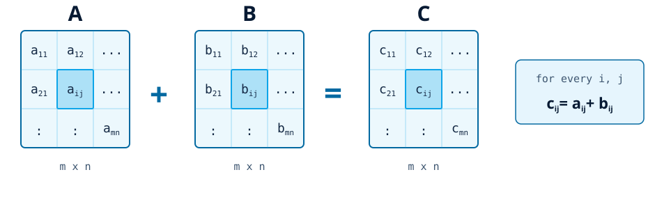
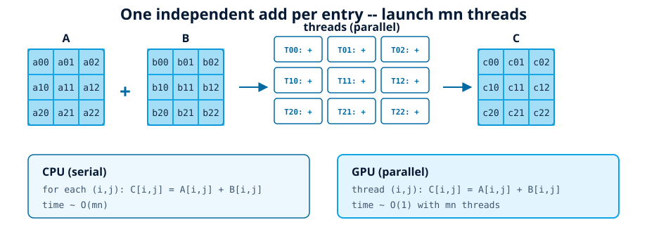
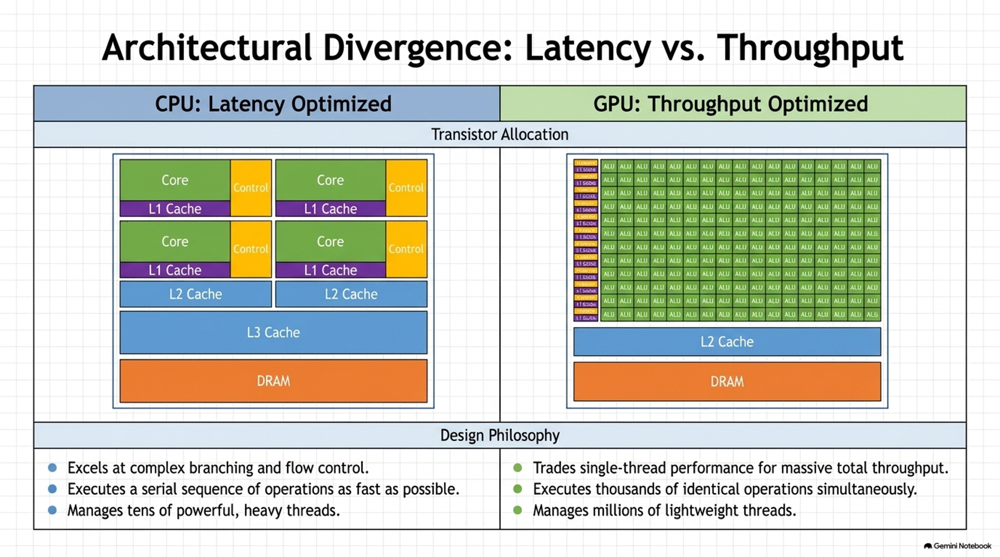
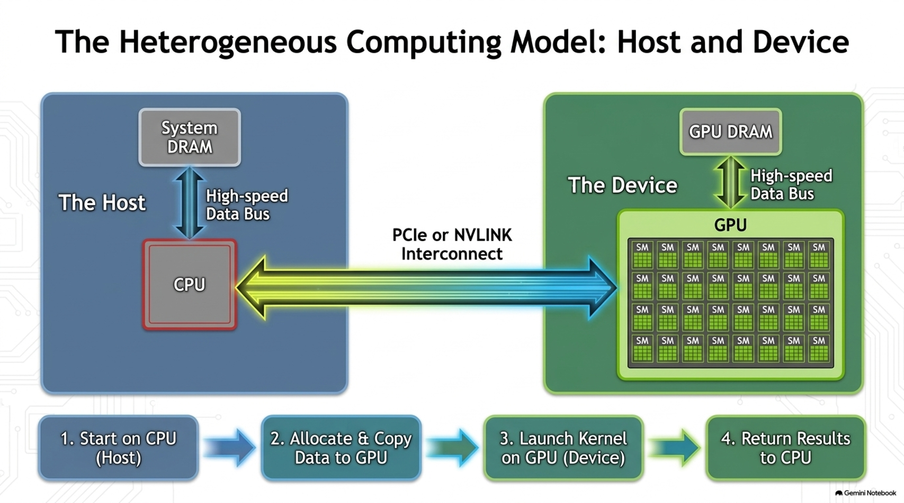
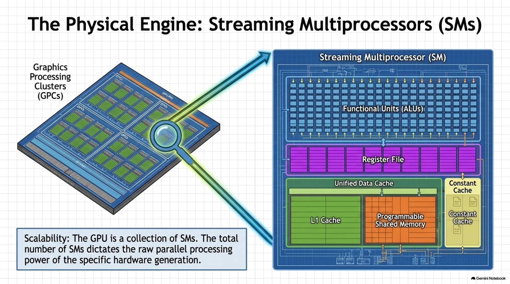
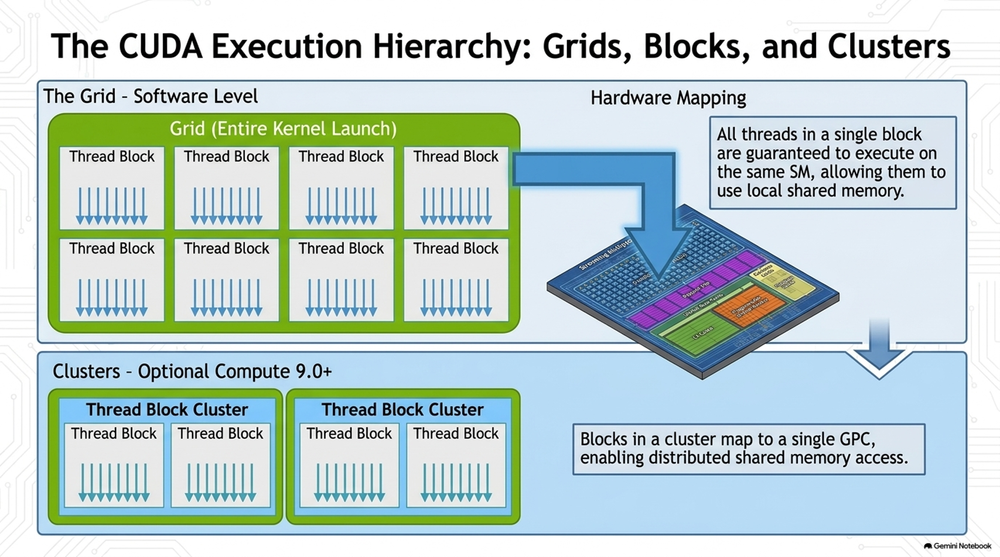
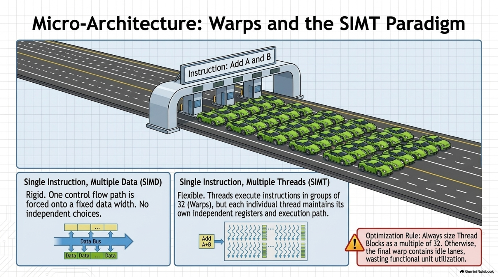
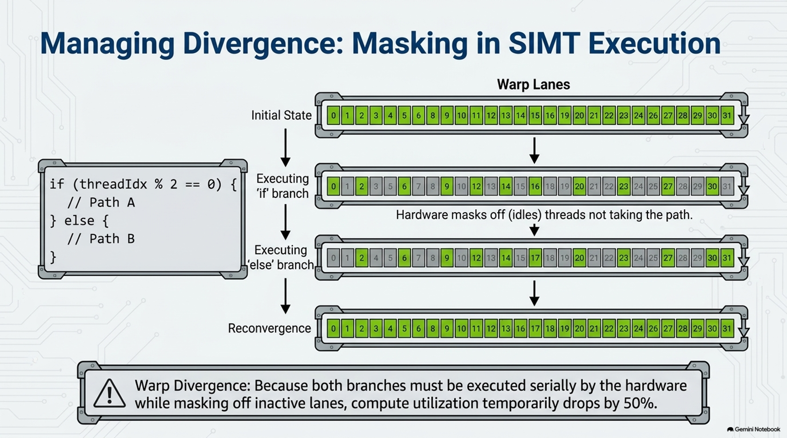
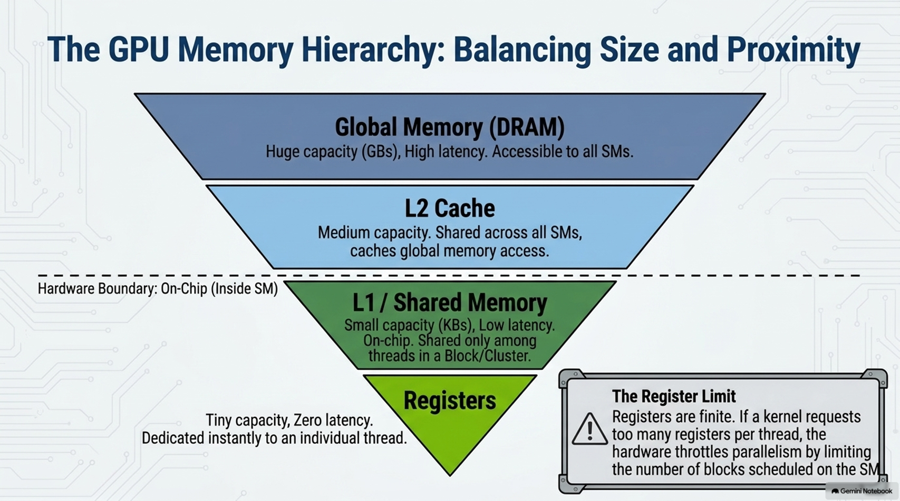

Tail Bounds(White Board) & GPU Programming Model
Aditya Desai · August 12th 2026
Many thanks to all the resources listed in References on the main website. Almost all figures are taken from these resources; some were generated with Gemini. Some images are taken from Google Images and still need proper citation (in progress).
Problem. Given two matrices $A, B \in \mathbb{R}^{m \times n}$, compute $C \in \mathbb{R}^{m \times n}$ by element-wise addition and store the result:
$$C_{ij} = A_{ij} + B_{ij} \quad \text{for all } i \in [m],\; j \in [n]$$

Traditional C (row-major, nested loops):
void mat_add(const float *A, const float *B, float *C,
int m, int n) {
for (int i = 0; i < m; i++) {
for (int j = 0; j < n; j++) {
int idx = i * n + j;
C[idx] = A[idx] + B[idx];
}
}
}
Shared-memory parallelism via OpenMP pragmas:
#include <omp.h>
void mat_add(const float *A, const float *B, float *C,
int m, int n) {
#pragma omp parallel for collapse(2)
for (int i = 0; i < m; i++) {
for (int j = 0; j < n; j++) {
int idx = i * n + j;
C[idx] = A[idx] + B[idx];
}
}
}#pragma omp parallel for — split loop iterations across threadscollapse(2) — flatten the nested loops into one $mn$-iteration space
CUDA C: one thread per entry
__global__ void mat_add(const float *A, const float *B,
float *C, int m, int n) {
int i = blockIdx.y * blockDim.y + threadIdx.y;
int j = blockIdx.x * blockDim.x + threadIdx.x;
if (i < m && j < n) {
int idx = i * n + j;
C[idx] = A[idx] + B[idx];
}
}
// launch in main:
main() {
....
dim3 block(16, 16);
dim3 grid((n + 15) / 16, (m + 15) / 16);
mat_add<<<grid, block>>>(A_d, B_d, C_d, m, n);
....
}





Most deep-learning compute reduces to GEMMs (\(C = AB\)). One output entry needs \(K\) multiply-adds: \(C_{ij} = \sum_k A_{ik} B_{kj}\).
Think: scalar ALU vs. a tiny matrix-multiplication engine.
Conceptually, an MMA computes \( D = A B + C \)
Low/medium precision, e.g. FP16, BF16, TF32, FP8
Many products computed in parallel
Into a wider accumulator, e.g. FP32
Tile shapes and supported datatypes depend on GPU architecture and instruction.
| Generation | Representative NVIDIA GPUs | Important capability |
|---|---|---|
| Volta | V100 | Tensor Cores introduced; FP16 → FP32 accumulation |
| Turing | T4 / RTX 20 | More formats + broader workloads |
| Ampere | A100 / RTX 30 | TF32, BF16, structured sparsity |
| Hopper | H100 | FP8, Transformer Engine, improved MMA |
| Blackwell | B100/B200/RTX 50 family | Further FP4/FP8-oriented AI throughput |
Lower precision means:
Typical ML pattern
FP16 / BF16 / FP8 inputs
↓
multiply at low precision
↓
accumulate in wider precision
Large GEMMs are decomposed into tiles; warps cooperate on tiles that map naturally to MMA instructions.
A Tensor Core instruction is coordinated across threads in a warp.
Each lane owns fragments of matrices.
Threads collectively issue an MMA operation.
Hardware consumes fragments and produces accumulator fragments.
Modern NVIDIA GPUs can accelerate certain structured sparse matrix operations.
Example: 2:4 sparsity
Within each group of four values, two are nonzero.
Dense:
$$[a,b,c,d]$$
Sparse 2:4:
$$[a,0,c,0]$$
Hardware/software encode the nonzero positions so the matrix engine can skip work.
\( Y = XW \)
Usually excellent Tensor Core workloads.
\( QK^\top \) and \( PV \)
Matrix-heavy; shape and memory behavior matter.
Two large GEMMs dominate many transformer blocks.
This is why Tensor Core throughput is central to modern LLM training and inference.